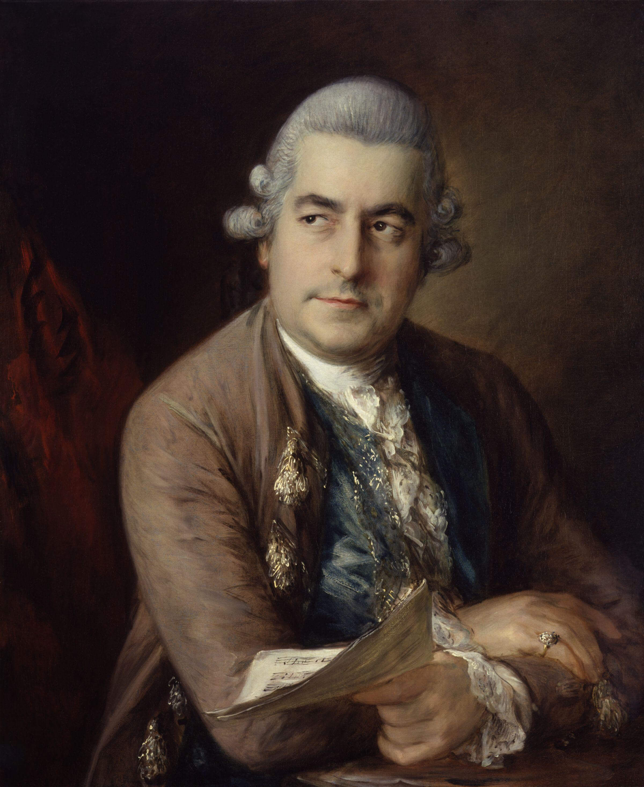

 Johann Christian Bach (1735-1782) es el hijo más joven de J.S. Bach. Nace en Leipzig el 5 de septiembre de 1735. Recibe la educación musical de manos de su propio padre. Muerto el gran Bach, se traslada a Berlín junto a su hermano mayor Carl Philipp Emanuel. Como ocurría con muchos músicos de su tiempo, viaja a Italia en 1756. Allí entrará en contacto con la ópera italiana y con la sinfonía derivada de ella. En 1762 se traslada a Londres donde alcanzará la fama, siendo conocido como el Bach de Londres.
Siguiendo el ejemplo de París se organizan en Londres conciertos de abono semanales. Bajo la dirección de Thomas Arne nacen con gran éxito de público los conciertos en los jardines de recreo de Vauxhall.
Junto con el violinista y compositor Carl Friedrich Abel, J.C. Bach funda en 1764 los Conciertos Bach-Abel, los cuales desde 1775 se interpretan en el famoso Hanover Square Rooms, la principal sala de Londres. Este mismo año Mozart, un niño de ocho años, visita Londres acompañado por su padre, tocando para él. Johann Christian Bach ejerció una gran influencia con su estilo galante sobre el desarrollo musical del joven Mozart.
Su fama empezó a descender en 1780, presentando su último concierto en Londres en 1781. Con graves dificultades económicas y enfermo muere al año siguiente, el 1 de enero de 1782 en Londres..
Dejó escritas unas sesenta sinfonías y además una veintena de sinfonías concertantes. Están escritas en tres movimientos, en la forma desarrollada por la sinfonía proveniente de la ópera italiana, con su alternancia, rápido, lento, rápido, usual de las oberturas.
Su estilo italiano cantabile, la plenitud empleada por la cuerda y el uso de los instrumentos de viento, tuvo una gran influencia sobre las obras de Mozart. Esto se puede comprobar especialmente en sus primeras sinfonías. Esta relación se hace evidente por ejemplo, entre la Sinfonía Op.3 Nº 1 de J.C. Bach y la Sinfonía K.19 de Mozart.
La “Sinfonía en re mayor” Op.3 Nº 1 empieza con un allegro con spirito en forma sonata con un tema al unísono. El andante está escrito para cuerda presentando su tema principal mediante los primeros violines, doblados luego por los segundos violines. El último movimiento, presto, empieza como el primero al unísono, con un tema que recorre todo el movimiento con el carácter de un motto perpetuo.
Cuando Mozart en 1782 se enteró de su muerte, le rindió un emocionante homenaje al utilizar un tema de una obertura de J.C. Bach en el movimiento lento de su “Concierto para piano en la mayor” KV 414. Estos préstamos temáticos se encuentran frecuentemente en las obras de Mozart, testimoniando la profunda influencia que J.C. Bach ejerció durante mucho tiempo en el maestro de Salzburg.
{kind=link}